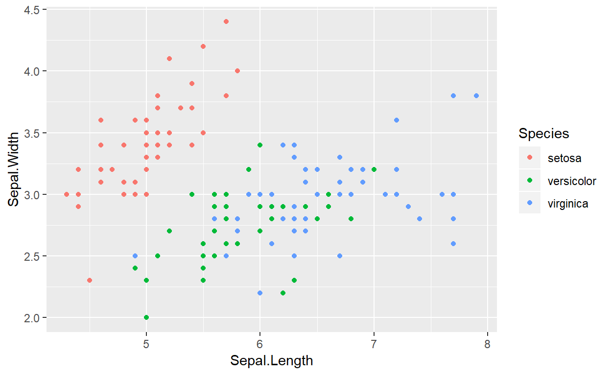
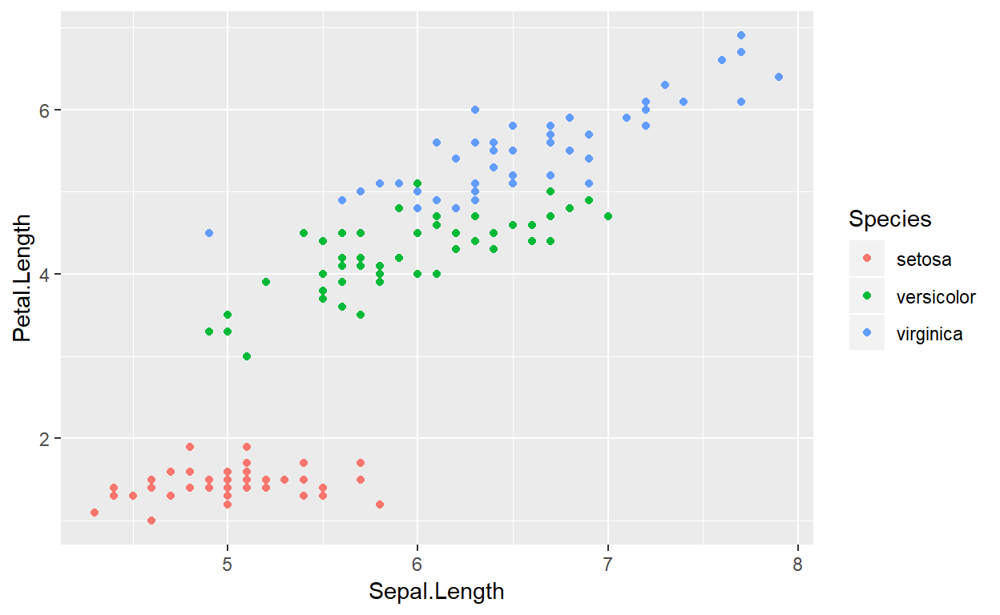
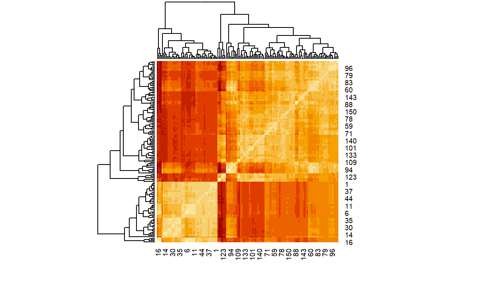
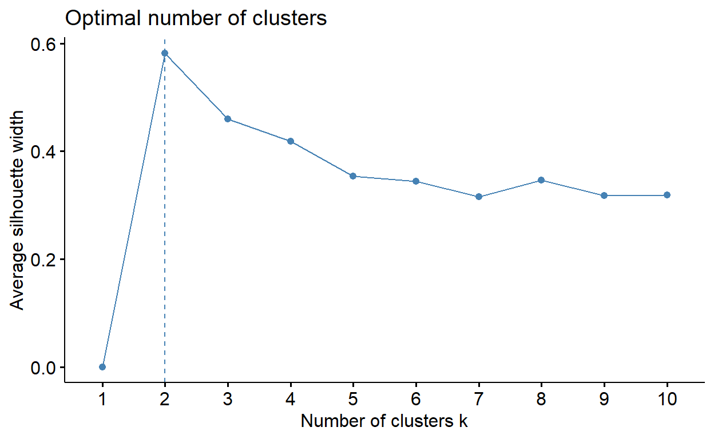
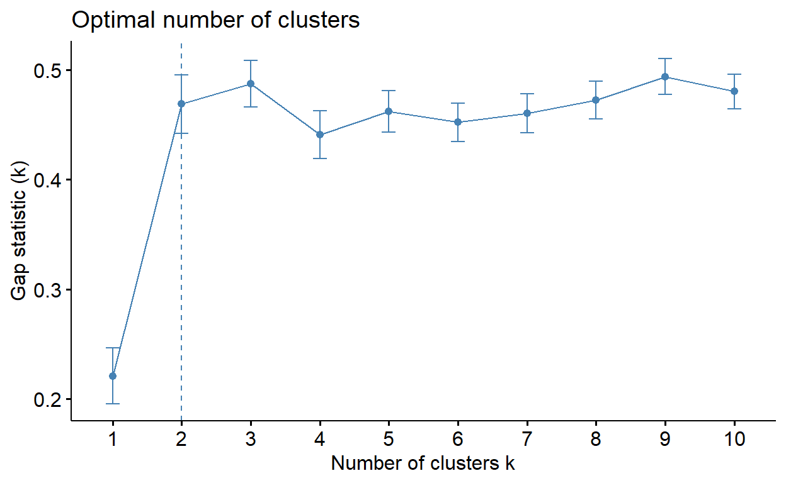

Clustering
There are many approaches to clustering. We will look at the following:
- Classification trees using `method=“anova” (supervised learning)
- \(k\) nearest neighbor clustering (supervised learning)
- \(k\)-means clustering (unsupervised)
- Naive Bayes
Classification Trees
See Linear Regression Tutorial.
\(k\) nearest neighbor
ADD LAZY DISCUSSION (chapter 3 machine learning with R)
Suppose we have data in table form. One attribute is the clustering attribute the rest act as explanatory variables. What we want to do is use the knowledge that we already have to make an educated guess as to the category to which some other element belongs. This can be done for binary categories as easily as for any other, so let’s use the UCLA data-set that we have previously examined:
` Logistic regression would allow us to predict the odds
Read this tutorial
You will be asked to do the R portions from the article in the exercise below so you might want to do type along while you are reading the article.
The Python has gotten a little bit out of date, so I will update it and include a Python section with the appopriate information below. You should type the Python into a Jupyter notebook. As always you should type the material yourself instead of using copy-and-paste.
I find it helpful (whether in R or in Python) to use wget from the corresponding terminal (and with the ssh-session in the proper working directory). You use wget to download the file:
# load libraries
import numpy as np
import pandas as pd
from sklearn.model_selection import train_test_split
from sklearn.metrics import accuracy_score
from sklearn.neighbors import KNeighborsClassifier
from collections import Counter
# define column names
names = ['sepal_length', 'sepal_width', 'petal_length', 'petal_width', 'class']
# load data
df = pd.read_csv('~/dsci3701/Clustering/iris.data', header=None, names=names)
df.head()
# create design matrix X and target vector y
# note the use of np arrays AND pandas dataframe:## sepal_length sepal_width petal_length petal_width class
## 0 5.1 3.5 1.4 0.2 Iris-setosa
## 1 4.9 3.0 1.4 0.2 Iris-setosa
## 2 4.7 3.2 1.3 0.2 Iris-setosa
## 3 4.6 3.1 1.5 0.2 Iris-setosa
## 4 5.0 3.6 1.4 0.2 Iris-setosaX = np.array(df.ix[:, 0:4]) # end index is exclusive
y = np.array(df['class']) # another way of indexing a pandas df
# split into train and test
X_train, X_test, y_train, y_test = train_test_split(X, y, test_size=0.33, random_state=42)
# instantiate learning model (k = 3)
knn = KNeighborsClassifier(n_neighbors=3)
# fit the model
knn.fit(X_train, y_train)
# predict the response## KNeighborsClassifier(algorithm='auto', leaf_size=30, metric='minkowski',
## metric_params=None, n_jobs=None, n_neighbors=3, p=2,
## weights='uniform')pred = knn.predict(X_test)
# evaluate accuracy and share results with knitted document
print accuracy_score(y_test, pred)## 0.98Now we will do the second part of the article, starting with the train() function:
def train(X_train, y_train):
# do nothing
returnThe predict function will use X_train and y_train as its data-resource to make a prediction for the category of x_test. The k argument indicates the number of nearest neighbors to consult:
def predict(X_train, y_train, x_test, k):
# create list for distances and targets
distances = []
targets = []
#
for i in range(len(X_train)):
# first we compute the euclidean distance
distance = np.sqrt(np.sum(np.square(x_test - X_train[i, :])))
# add it to list of distances
distances.append([distance, i])
#
# sort the list
distances = sorted(distances)
#
# make a list of the k neighbors' targets
for i in range(k):
index = distances[i][1]
targets.append(y_train[index])
#
# return most common target
return Counter(targets).most_common(1)[0][0]Here’s where the actual sutff happens
def kNearestNeighbor(X_train, y_train, X_test, predictions, k):
# train on the input data (this is really a dummy function)
train(X_train, y_train)
#
# loop over all observations
for i in range(len(X_test)):
predictions.append(predict(X_train, y_train, X_test[i, :], k))Now let’s do it and see what happens
predictions = []
kNearestNeighbor(X_train, y_train, X_test, predictions, 7)
# transform the list into an array
predictions = np.asarray(predictions)
# evaluating accuracy
accuracy = accuracy_score(y_test, predictions)
print('\nThe accuracy of our classifier is %d%%' % (accuracy*100))##
## The accuracy of our classifier is 98%Exercise:
- Replicate the python (no copy-pasting) in a Jupyter notebook. (difficulty: easy)
- Replicate the R-graphing code from article (difficutly: easy)
- Rewrite the functions
train(),predict(),kNearestNeighbor()in R (difficulty level: medium) - Create an
accuracy_scorefunction (difficulty: medium-hard)
Details
I want to pull out a few details from the tutorial.
- The larger the value of \(k\) the the more neighbors are consulted in the voting process and the more the process resembles “choose the most common”. The lower the value of \(k\) the more variance and sensitivity to outliers.
- The scale of a variable has a strong influence on the distance function. Without a compelling reason (like a shared scale) to do otherwise you will probably want to standardize your scales. Common choice include \(min-max\)-scaling \(\left(x_i'=\frac{x_i-\textrm{min}}{\textrm{max}-\textrm{min}}\right)\) or \(z\)-scoring: \(z_i = \frac{x_i - \overline{x}}{s_x}\) where \(s_x\) is the standard deviation of the variable.
- Pay very careful attention to categorical variables– if they are imported as factors (The default) then, under the hood, there is a number associated to each level– the normal Euclidean distance ideas may be meaningless in such situations.
Let’s apply this techniqe to the UCLA entrance data. Recall
| Variable | Type |
|---|---|
| admit | 1-hot coding |
| gre | numeric |
| gpa | numeric |
| rank | defaults in read.csv() as numeric. |
The admit variable is, of course, what I am most interested in being able to predict. As we saw in the Regression Tutorial we will want to normalize our variables. We will do that down below
Let’s get the data into a dataframe:
## [1] "admit" "gre" "gpa" "rank"Now let’s normalize:
Our data set isn’t particularly large. Let’s use 2/3 for the training and 1/3 for the test set. There are lots of ways to do this. I’m going to use the sample() function to choose 1/3 of the rows numbers. I’ll create a data list and a true.values list. Both will hold two entries: One for “train” and one for “test”.
Also, to avoid confusion later I am going to change the admit variable so that it holds the values “reject” and “admit”.
We now have a list called data with two entries (both of which are data.frames)
data$traindata$test
We have a similar one called true.values.
We will use the knn() function from the package class:
## [1] admit reject reject reject admit admit
## Levels: admit rejectThere are just as many results as there are entries in the test data set. Let’s make the confusion matrix and see what our accuracy looks like:
## [1] 0.6466165Let’s calculate the accuracy for all possible values of \(k\)
As you can see, after a certain point the process settles down to a constant accuracy– that’s, not surprisingly the result of just voting “reject” on all of the testing data is what dominates when \(k\) is large enough.
Why is that? Well, for one thing, by standardizing the results we, essentially, gave each variable the same weight in the decision making process… but we know that’s not necessarily a good idea.
This same weakness can also manifest, surprisingly, in situations with high dimensionality (translate that last phrase as “many variables”). As more variables are introduced, a variable’s ability to make enough of a difference to distinguish between cases can be swamped out by random noise in the remaining variables.
One of the most common datasets (and one that is included in R) is the Iris data set used by one of the founders of modern biological statistics– Fisher
In an R console type ?iris and learn the details.
You’ll want to do some graphic explorations. I’ll start with some information regarding the sepal:

Exercise: Repeat the last example using Iris. You are categorizing off of species. Make an accuracy plot. Notice that quite rapidly an increasing \(k\) dramatically reduces accuracy:
BONUS: Do it for both forms of normalization (you might find the R function scale() helpful)

\(k\)-means clustering
In \(k\)-nearest neighbor we already know the category to which the row should belong. This is an example of supervised learning. IF we did NOT know, but suspected there was some deeper structure, we might use a “clustering” algorithm.
The hope is that we will be able to naturally find groups. I am going to heavily borrow from https://uc-r.github.io/kmeans_clustering.
In this IRIS example, we might try various values of \(k\) and assess the clustering for various values of \(k\). We will need the packages cluster and factoextra. We are going to need to normalize. In the last section we, used min-max normalization in the example, but I asked you (as extra) to use both forms of standardization. For small values of \(k\) they are essentially the same, particularly for small \(k\), atlhough there were some intriquing patterns in the accuracy that could be fun to explore. For this one, doing the z-score normalization makes the most sense to me– the value are numeric
However the
## Welcome! Related Books: `Practical Guide To Cluster Analysis in R` at https://goo.gl/13EFCZThe factoextra package has the fviz_dist function:

Another common visualization function (really the same basic idea) is heatmap()

heatmap() has the advantage of produce dendrograms (tree diagrams) which are an attempt to do some hieraricical clustering.
The \(k\)-means algorithm, and I’m sure you’re getting tired of this… tries to choose centers of groups in order to minimize a sum-of-squares error function. Since we have an advantage and already know that there are 3 clusters… let’s do this and see how good it does. First we’ll do the clustering (nstart=25 is recommended by our tutorial)
The cluster object has many components that we can access:
## [1] "cluster" "centers" "totss" "withinss"
## [5] "tot.withinss" "betweenss" "size" "iter"
## [9] "ifault"The tutorial has more details. We’ll look at cluster$cluster and compare them to the true species:
##
## setosa versicolor virginica
## 1 0 11 36
## 2 50 0 0
## 3 0 39 14We have to look carefully to decide which cluster should be associated with each species, but it’s pretty clear:
| Cluster | species |
|---|---|
| 1 | setosa |
| 2 | versicolor |
| 3 | virginica |
Luckily these values fell on the diagonal, so we can calculate the accuracy:
## [1] 0.09333333Not to shabby. Not as good as the $k-nearest neighbor approach, but given that this approach does not know the species it’s pretty good. Particularly setosa which clearly was easily grouped.
Let’s use the fviz_cluster() function with the original data values:
That separation between 3 (setosa) and the others is very strong… but if we limit our attention to just versiolor and virginica, Our accuracy is closer to 75%
So what are we seeing?
ADD MORE HERE! ADD 3-FOLD cross validation here Using the elbow method:
Using the silhouette method:

Interesting… The data clearly thinks that 2 groups is a better idea

This one suggests 2 clusters as well… the moral of the story is… sometimes you need outside knowledge to get it right!
Hierarichical clustering methods
Naive Bayes
We use the usual machine learning vocabulary to describe this situation– the data is tabular. The emphasis is on rows (which we might call subjects, units, or cases in more traditional statistical vocabulary). In database parlance we would call a row a record.
Instead of discussing variables, we instead refer to features or attributes (in database language these would be called fields).
Bayes Law (see the Mathemtical Background for a more complete refresher). We will use the convention that \(\Omega\) is the sample space and \(H,E \subset \Omega\) are events. (Here called the Hypothesis and the Evidence) We will also use a superscript \(c\), such as \(H^c\) to denote the complement. (I actually prefer the overline– but it’s too easy to confuse with the sample mean). Bayes rule says:
\[ \begin{aligned} \textrm{P}(H|E) &= \frac{P(E|H)P(H)}{P(E)}=\frac{P(E|H)}{P(E)}P(H)\\ \end{aligned} %=\frac{P(B|A)P(A)}{P(B|A)P(A) + P(B|A^c)P(A^c)} \] In Bayesian statistics, probability is measured in terms of certainty. I’m using the notation of Wikipedia’s entry on Bayesian inference because I think the \(E\) and \(H\) help make several things easier to understand.
Think of \(H\) as a hypothesis and \(E\) as evidence. \(P(H)\) represents our Prior knowledge about the hypothesis \(H\), which is, in an information sense, equivalent to our knowledge about \(H^c\) (having a firm believe about when something will happen is equivalent to having a firm belief about when it will not happen). The ratio \(\frac{P(E|H)}{P(E)}\) is the support provided by \(E\) for \(H\). The numerator, \(P(E|H)\) is also known as the likelihood. Finally \(P(H|E)\) is the new belief about \(H\) after taking \(E\) into consideration (this is the posterior distribution).
Say the formula to yourself in words:
Our belief that the hypothesis is true, given the evidence, is our earlier belief in hypothesis adjusted by the relationship between the liklihood of the evidence (under the hypothesis) and our belief about the evidence occuring in general.Notice that if \(E\) and \(H\) are independent (in the probability sense) then \(P(E|H) = P(E)\) and the ratio \(\frac{P(E|H)}{P(E)}=\frac{P(E)}{P(E)}=1\) and so our posterior probability, \(P(H|E)\) is the same as our prior probability \(P(H)\). In other words, if our belief in the evidence is not influenced by the hypothesis then whether it occurs or does not occur will not influence our assessment of the hypothesis.
On the other hand… if the evidence is more likely under the hypotheis then taken in general (say twice as likely) then we’ll double our belief in the hypothesis.
Now there’s one more piece to the puzzle. We usually don’t enter into thinking about \(P(E)\) without considering a hypothesis. So we use the law of total probability to rewrite \(P(E)\):
\[ P(E) = P(E|H)P(H) + P(E|H^c)P(H^c) \]
Now we are saying that our belief in the evidence occuring arises from four considerations:
- Our belief in \(H\)
- Our belief in \(H^c\)
- Our belief that the evidence will occur under \(H\)
- Our belief taht the evidence will occur under \(H^c\)
So….in plain words
We change our old belief about the hypothesis \(H\) (\(P(H)\)) in the face of evidence \(E\) (\(P(H|E)\)) by comparing our beliefs about the likelihood of the evidence occuring under the hypothesis (\(P(E|H)\)) and our beliefs about the evidence occuring no matter what happens to be true \(P(E)\), but our belief about \(E\) can be broken down into our belief about \(E\) under \(H\) and under \(H^c\) (\(P(E) = P(E|H)P(H) + P(E|H^c)*P(H^c)\)). Notice that our beliefs about the liklihood of \(E\) occuring under \(H\) and under \(H^c\) certainly don’t need to add to 1. As an extreme example, if we believed that \(E\) was inevitable… no matter what… then \(P(E|H) = 1\) and \(P(E|H^c)=1\).
As a more numeric example, Suppose we were considering the possiblity of a fair die, and of one where even numbers were twice as likely as odd numbers.
For some mysterious reason these are the only two options that are under consideration… perhaps this somewhat contrived scenario involves a magician. In any event, we would have the following probability tables for a single roll (rounded to 2 places and slightly adjusted to add to 1):
situation 1
| 1 | 2 | 3 | 4 | 5 | 6 |
|---|---|---|---|---|---|
| 0.17 | 0.17 | 0.17 | 0.17 | 0.16 | 0.16 |
situation 2
| 1 | 2 | 3 | 4 | 5 | 6 |
|---|---|---|---|---|---|
| 0.11 | 0.22 | 0.11 | 0.22 | 0.11 | 0.23 |
Now let’s consider rolling two dice and seeing that the sum is 10. Under the first scenario this can only arise when the die rolls are \(\left\{(4,6), (5,5), (6,4)\right\}\) since the die rolls are independent the probabilitity that the sum is 3 is \(0.17*0.16+0.16*0.16+0.16*0.17=0.08\).
Under the second scenario it is \(0.22*0.22+0.11*0.11+0.23*0.23-0.1133\)
Now here is where it gets interesting: Without any math– if we were to observe a sum of 10 on two die rolls we would be slightly more inclined to believe the second hypothesis \(H^c\) over the first, \(H\).
Will the math support this? The answer is YES. Remember that \(E=\textrm{sum is 10}\). So we have \(P(E|H) = 0.0867\) and \(P(E|H^c) = 0.1089\). No matter what probabilities we assign to \(H\), \(P(H)\) is a weighted average of \(P(E|H)\) and \(P(E|H^c)\) where \(P(H)\) and \(P(H^c)\) play the role of the scalars in the linear combination. (review math background on this)
So if \(P(E|H) \ge P(E|H^c)\)then \(P(E|H) \ge P(E)\). And thus the ratio \(\frac{P(E|H)}{P(E)}\ge 1\). Similarly, if \(P(E|H) \le P(E|H^c)\) then \(P(E|H) \le P(E)\) and the ratio \(\frac{P(E|H)}{P(E)}\le 1\)
Also notice that the entire RHS of the equation has an equivalent form:
\[ \begin{aligned} \frac{P(E|H)}{P(E)}P(H)&=\frac{P(E|H)P(H)}{P(E)} \\ &=\frac{P(E \textrm{ and } H)}{P(E)} \end{aligned} \]
Clearly \(P(E \textrm{ and } H) \le P(E)\) and thus
\[ \begin{aligned} \frac{P(E|H)}{P(E)}P(H)&=\frac{P(E \textrm{ and } H)}{P(E)}\\ &\le \frac{P(E)}{P(E)}\\ &=\le 1 \end{aligned} \]
Similarly, the ratio must be \(\ge 0\). So no matter how big, or how small the ratio \(\frac{P(E|H)}{P(E)}\) the new value, \(P(H|E)\) will still be between 0 and 1.
Exercise: Using your functions from the R review (two.roll.sum and weighted.die) define your two tables as
Start with the assumption that both dice are equally likely and set.seed(10). Use your function weighted.die to roll a fair die twice and calculate the sum.
Using this sum as evidence and two.roll.sum update your belief in \(H\). Repeat until \(P(H)> 0.95\). How many iterations did it take?
## [1] 227I hunted around for awhile until I found a seed that brought \(H\) below 0.5 (most of the one’s I tried didn’t dip below 0.5)
We can calculate the probability of getting a sum that makes our assessment of \(H\) drop by figuring out which sums are more likely under \(H^c\):
## [1] 0.2433We can also look at the number of improvements vs diminishments:
##
## -1 1
## 58 169and convert to a proportion:
## [1] 0.2555066So there is almost a 25% chance that our fair die will generate a result that makes us more likely to believe \(H^c\) over \(H\). However, over time, even when purely random we expect, eventually, for \(H\) to win-out.
But if our decision policy is to accept H if H >0.95$accept H^c if H<0.05` then sometimes we would expect, through random chance, to reject \(H\) when we should not type I error.
Notice that we have not calculate the probability of a type I error– our situation is more like a random walk– the probability, per trial, of an advantageous result (one that promotes the truth about \(H\)) is over 75% and the probability of a disadvantageous result (is less thatn 25%)…
The actual probablility of reaching the 0.95 or 0.05 thresholds of decision depend also upon how much the value of \(P(H)\) is perturbed for various pieces of evidence. We’re not going to pursue that here… although we did simulate one run up above.
On the other hand we could a consider how likely it is to generate a result that is disadvantageous to \(H^c\), when \(H^c\) is, in fact, the truth. This is related to the type II error.
## [1] 0.66wow! 66%
Let’s see if we even converge to the true answer:
## [1] 146
## [1] 0.6506849So… we moved “up” (towards accepting \(H\)) far more frequently than down…. but when we moved down the change was more extreme. So in the end, we reached the proper decision threshold anyway.
This phenomenon is important in both data science and science in general– and it relates to why no one experiment should be taken too seriously.
##H2O
H2o is an open source, machine learning (and AI) platform. Both Python and R have libraries for interfacing with the software. We will use an example from R. H2o is a java program that provides an API that R and Python use to communicate with it.
To use an H2o R function one needs to first initialize the H2o server. This is done using h2o.init() R will attempt to start an h2o server and connect on the localhost vai the appropriate port. IN order to understand the conventions used in the R interface you need to understand that H2o does not have access to the R memory space:
Note that no actual data is stored in the R workspace; and no actual work is carried out by R. R only saves the named objects, which uniquely identify the data set, model, etc on the server. When the user makes a request, R queries the server via the REST API, which returns a JSON file with the relevant information that R then displays in the console.That means that the basic usage has four steps:
- Initialize the H2o engine/server
- Transfer files to the server
- Perform the operations
- Get the data
That last one is a bit subtle– the R objects returned by the R H2o functions are indeed, R objects, but they interact with the H2o server to pull data as necessary. If the object is saved, that does not mean that the connection is maintained… Often this is the best solution– why make two copies of the data (particularly if the data set is large)? But somtimes the final reslt of along analysis is a reasonably sized set of data.. in that case it’s nice to pull the data into a local R object so that it can be saved in a manner that is independent of the H2o server and it’s connection to RStudio.
Let’s apply this to the iris data we have been using. Since the h2o package has a copy of the file (it’s popular in machine learning circles) we can use system.file() to find the file’s location and upload it:
##
## ----------------------------------------------------------------------
##
## Your next step is to start H2O:
## > h2o.init()
##
## For H2O package documentation, ask for help:
## > ??h2o
##
## After starting H2O, you can use the Web UI at http://localhost:54321
## For more information visit http://docs.h2o.ai
##
## ----------------------------------------------------------------------##
## Attaching package: 'h2o'## The following objects are masked from 'package:stats':
##
## cor, sd, var## The following objects are masked from 'package:base':
##
## &&, %*%, %in%, ||, apply, as.factor, as.numeric, colnames,
## colnames<-, ifelse, is.character, is.factor, is.numeric, log,
## log10, log1p, log2, round, signif, trunc## Connection successful!
##
## R is connected to the H2O cluster:
## H2O cluster uptime: 2 hours 56 minutes
## H2O cluster timezone: America/Chicago
## H2O data parsing timezone: UTC
## H2O cluster version: 3.24.0.5
## H2O cluster version age: 1 month and 12 days
## H2O cluster name: H2O_started_from_R_dolanp_blu152
## H2O cluster total nodes: 1
## H2O cluster total memory: 26.08 GB
## H2O cluster total cores: 16
## H2O cluster allowed cores: 16
## H2O cluster healthy: TRUE
## H2O Connection ip: localhost
## H2O Connection port: 54321
## H2O Connection proxy: NA
## H2O Internal Security: FALSE
## H2O API Extensions: Amazon S3, XGBoost, Algos, AutoML, Core V3, Core V4
## R Version: R version 3.5.3 (2019-03-11)Now we find the path, upload it, and store the relevant access information in an R object for future interactions with H2o:
##
|
| | 0%
|
|=================================================================| 100%##
|
| | 0%
|
|=================================================================| 100%## Warning in write.csv(tmp$train, file = "iristrain.csv", row.names =
## FALSE, : attempt to set 'col.names' ignored## Warning in write.csv(tmp$test, file = "iristest.csv", row.names = FALSE, :
## attempt to set 'col.names' ignored##
|
| | 0%
|
|=================================================================| 100%##
|
| | 0%
|
|=================================================================| 100%##
|
| | 0%
|
|=================================================================| 100%## Model Details:
## ==============
##
## H2OMultinomialModel: naivebayes
## Model Key: NaiveBayes_model_R_1564579412771_5
## Model Summary:
## number_of_response_levels min_apriori_probability
## 1 3 0.32000
## max_apriori_probability
## 1 0.36000
##
## H2OMultinomialMetrics: naivebayes
## ** Reported on training data. **
##
## Training Set Metrics:
## =====================
##
## Extract training frame with `h2o.getFrame("iristrain.hex_sid_98eb_2")`
## MSE: (Extract with `h2o.mse`) 0.03331574
## RMSE: (Extract with `h2o.rmse`) 0.182526
## Logloss: (Extract with `h2o.logloss`) 0.1295557
## Mean Per-Class Error: 0.03935185
## Confusion Matrix: Extract with `h2o.confusionMatrix(<model>,train = TRUE)`)
## =========================================================================
## Confusion Matrix: Row labels: Actual class; Column labels: Predicted class
## setosa versicolor virginica Error Rate
## setosa 32 0 0 0.0000 = 0 / 32
## versicolor 0 34 2 0.0556 = 2 / 36
## virginica 0 2 30 0.0625 = 2 / 32
## Totals 32 36 32 0.0400 = 4 / 100
##
## Hit Ratio Table: Extract with `h2o.hit_ratio_table(<model>,train = TRUE)`
## =======================================================================
## Top-3 Hit Ratios:
## k hit_ratio
## 1 1 0.960000
## 2 2 1.000000
## 3 3 1.000000
##
##
## H2OMultinomialMetrics: naivebayes
## ** Reported on validation data. **
##
## Validation Set Metrics:
## =====================
##
## Extract validation frame with `h2o.getFrame("iristest.hex_sid_98eb_3")`
## MSE: (Extract with `h2o.mse`) 0.03429075
## RMSE: (Extract with `h2o.rmse`) 0.1851776
## Logloss: (Extract with `h2o.logloss`) 0.1035551
## Mean Per-Class Error: 0.03703704
## Confusion Matrix: Extract with `h2o.confusionMatrix(<model>,valid = TRUE)`)
## =========================================================================
## Confusion Matrix: Row labels: Actual class; Column labels: Predicted class
## setosa versicolor virginica Error Rate
## setosa 18 0 0 0.0000 = 0 / 18
## versicolor 0 14 0 0.0000 = 0 / 14
## virginica 0 2 16 0.1111 = 2 / 18
## Totals 18 16 16 0.0400 = 2 / 50
##
## Hit Ratio Table: Extract with `h2o.hit_ratio_table(<model>,valid = TRUE)`
## =======================================================================
## Top-3 Hit Ratios:
## k hit_ratio
## 1 1 0.960000
## 2 2 1.000000
## 3 3 1.000000
##
##
##
##
## NULLNaive Bayes Look at the confusion matrix. Not too shabby is it? (18+14+16)/(18+14+16+2)=96 percent accuracy
You s
Naive Bayes is often used in spam detection. The idea is that a collection of words is gathered from a large setof emails. A large table is produced where the value is 0 if the word is missing and a 1 if the word is present.
##Add shorcomings